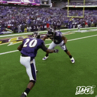

Lab 04 Multi Web Page
2nd Image
This page will have my second image that will be a gif.
About
With the experience I got from the previous page this page was way quicker and easier to style in terms of the gif. I used this gif becaus it was simple and not many colors were shown.
This image is about Ray Lewis and Ed Reed who are two Hall of Fame players for the Baltimore Ravens hence why this page is called "HOF".